ДЕТЕЙЛИНГ АВТОМОБИЛЯ
Детейлинг - это не просто мойка автомобиля и полировка кузова. Это ощущение "нового" автомобиля, удовольствие от его эстетичного внешнего вида и исправной работы. В нашем детейлинг-центре в Донецке Вы найдете полный спектр услуг - детейлинг-мойка, детейлинг двигателя, полировка кузова, нанесение защитных покрытий, химчистка салона, восстановление пластика.
ПРОГРАММА ДЕТЕЙЛИНГ-УХОДА ЗА АВТОМОБИЛЕМ
ДЕТЕЙЛИНГ-МОЙКА
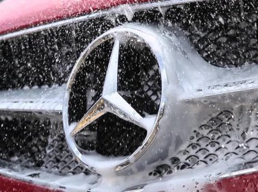Двухфазная мойка
Трехфазная мойка
Глубокая очистка арок, дисков, покрышек, дверных проемов
ПОЛИРОВКА
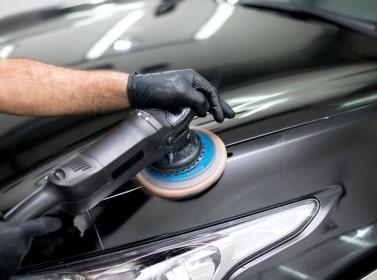Удаление моечной риски
Коррекционная полировка
Восстановительная полировка
ХИМЧИСТКА
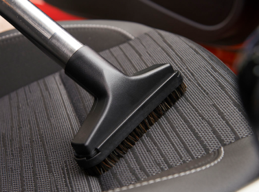Удаление загрязнений с сидений, пола, потолка
Очистка пластика
Очистка кожи
ЗАЩИТНЫЕ ПОКРЫТИЯ
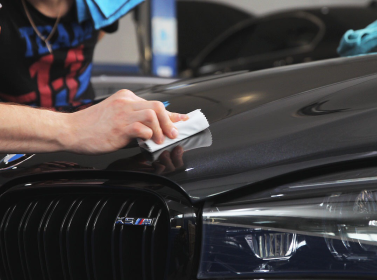Нанесение защитных полимерных составов
Жидкое стекло
Керамические покрытия
Антигравийная пленка
Только деликатная мойка с использованием pH-нейтральных шампуней и гипоаллергенных составов
Детейлинг-мойка автомобиля
Детейлинг мойка у нас - это мойка автомобиля по правильной двух- или трехфазной технологии с использованием профессионального оборудования, специального освещения и премиальной автохимии (Meguiar's, 3M, Koch Chemie), безопасной для автомобиля и его владельца и исключающей повреждения кузова. Мойка включает глубокую очистку арок, дверных проемов, колесных дисков, покрышек, использование защитных составов на внешнем и внутреннем пластике.
1 фаза - бесконтактная мойка, удаление основных загрязнений с поверхности автомобиля при помощи низкощелочных составов, не повреждающих кузов, пластик и хром.
2 фаза - ручная мойка по методу "два ведра", бережное удаление остаточных загрязнений при помощи крупнопористой губки и шампуня для ручной мойки, а также кистей - неотъемлемой части детейлинга.
2 ЭТАП - ПОЛИРОВКА КУЗОВА АВТОМОБИЛЯ
ПОЛИРОВКА ФАР
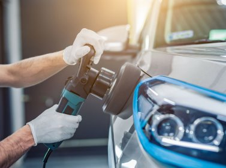Удаление помутнений
Восстановление прозрачности
Защита фар
ЛЕГКАЯ
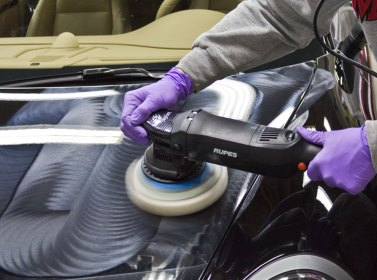Удаление микроцарапин, моечной риски
Удаление голограмм, следов окисления
Поднятие блеска
КОРРЕКТИРУЮЩАЯ
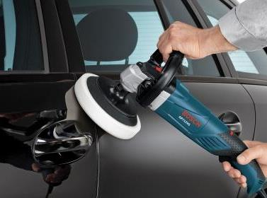Удаление мелкой и средней риски
Удаление голограмм, следов окисления
Придание блеска лкп
ВОССТАНОВИТЕЛЬНАЯ
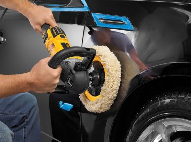Удаление глубоких царапин
Придание блеска лакокрасочному покрытию
Мы не маскируем дефекты кузова силиконосодержащими составами, а удаляем их, макимально сохраняя толщину лака
Полировка кузова автомобиля
Детейлинг мойка у нас - это мойка автомобиля по правильной двух- или трехфазной технологии с использованием профессионального оборудования, специального освещения и премиальной автохимии (Meguiar's, 3M, Koch Chemie), безопасной для автомобиля и его владельца и исключающей повреждения кузова. Мойка включает глубокую очистку арок, дверных проемов, колесных дисков, покрышек, использование защитных составов на внешнем и внутреннем пластике.
1 фаза - бесконтактная мойка, удаление основных загрязнений с поверхности автомобиля при помощи низкощелочных составов, не повреждающих кузов, пластик и хром.
Полировка фар автомобиля
Даже при самой аккуратной эксплуатации автомобиля любые фары, особенно пластиковые, со временем утрачивают прозрачность, становятся мутными и зацарапываются. Это не только ухудшает внешний вид автомобиля, но и затрудняет видимость в темное время суток. Полировка фар поможет вернуть оптике первозданный внешний вид и свойства.
В зависимости от состояния фары специалисты нашего детейлинг-центра предложат Вам легкую полировку фар или полировку с предварительной шлифовкой, если повреждения оптики более значительные. Полировка фар подразумевает снятие в несколько этапов поврежденного слоя пластика при помощи абразивных средств. В нашем распоряжении самые современные полировальные системы Meguiar's (США), 3M (США), Rupes (Италия), сама процедура занимает не более 1 часа, после чего фара вновь обретает гладкость и прозрачность.
2 фаза - ручная мойка по методу "два ведра", бережное удаление остаточных загрязнений при помощи крупнопористой губки и шампуня для ручной мойки, а также кистей - неотъемлемой части детейлинга.
3 ЭТАП - ЗАЩИТА ЛАКОКРАСОЧНОГО ПОКРЫТИЯ
ТВЕРДЫЙ ВОСК
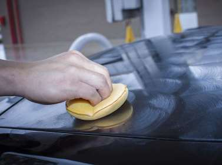Защита до 3 месяцев
Сохранение блеска после полировки
КЕРАМИЧЕСКИЕ ПОКРЫТИЯ
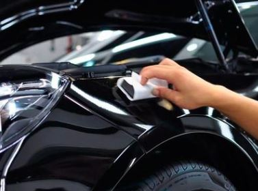Защита до 1 года
Поддержание блеска кузова
Гидрофобный эффекТ
ЖИДКОЕ СТЕКЛО
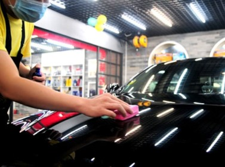Защита до 6 лет
Придание блеска и глубины цвета
Водоотталкивающий эффект
АНТИГРАВИЙНАЯ ПЛЕНКА
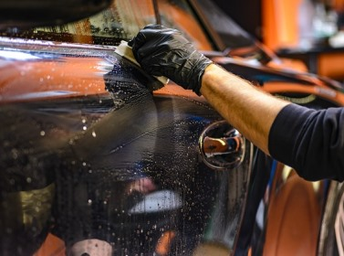Удаление глубоких царапин
Придание блеска лакокрасочному покрытию
Сохраните кузов в идеальном состоянии как можно дольше при помощи нано-защиты, жидкого стекла и антигравийной пленки
Твердый воск, нанокерамика, жидкое стекло
Детейлинг мойка у нас - это мойка автомобиля по правильной двух- или трехфазной технологии с использованием профессионального оборудования, специального освещения и премиальной автохимии (Meguiar's, 3M, Koch Chemie), безопасной для автомобиля и его владельца и исключающей повреждения кузова. Мойка включает глубокую очистку арок, дверных проемов, колесных дисков, покрышек, использование защитных составов на внешнем и внутреннем пластике.
1 фаза - бесконтактная мойка, удаление основных загрязнений с поверхности автомобиля при помощи низкощелочных составов, не повреждающих кузов, пластик и хром.
2 фаза - ручная мойка по методу "два ведра", бережное удаление остаточных загрязнений при помощи крупнопористой губки и шампуня для ручной мойки, а также кистей - неотъемлемой части детейлинга.